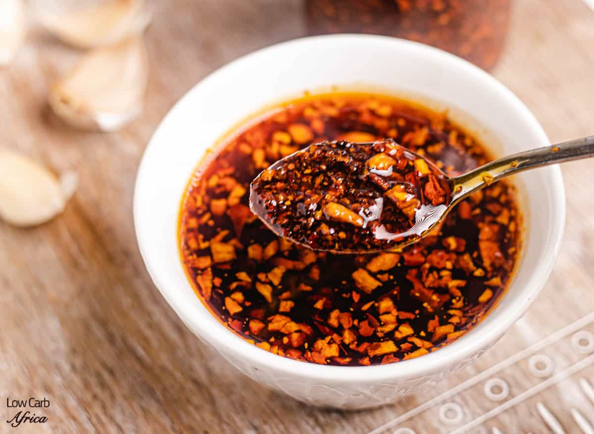

Garlic Chilli Oil

Description
Chili oil is a classic condiment featuring vegetable oil infused with spicy dried chili peppers
This spicy oil is perfect for drizzling over ramen noodle bowls, sautéing veggies, dunking dumplings and potstickers, and so much more!
Ingredients:
- 1/4 cup avocado oil or vegetable oil
- 3 cloves garlic , peeled and thinly sliced
- 1 TBSP toasted sesame seeds
- 1 TBSP crushed red chili flakes
Steps:
-
Add crushed red chili flakes to a small heat-safe bowl and set aside. I like using crushed red pepper flakes, but multiple varieties will work here!
-
Heat 1/4 cup oil in a medium pot over medium heat!
-
Once hot, add thinly sliced garlic and pan fry, stirring often, until garlic is just beginning to turn golden, approx. 2 minutes
-
Stir in sesame seeds and cook an additional minute until garlic is crisp and toasty. Take care not to overcook the garlic as it will continue crisping once removed from heat
-
Carefully transfer mixture to the red pepper flake bowl. Mix well and allow to cool